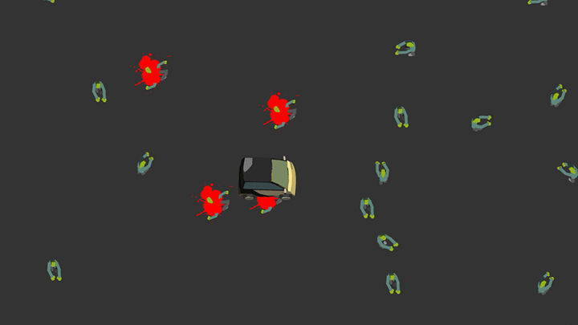

FRONT
LAB
Voici quelques expérimentations front. Cette page aux couleurs aléatoires accessibles, étant elle-même une expérimentation.
Les autres projets sont pour l'instant des choses que j'avais codées en Flash à l'époque ou des principes sur lesquels j'avais travaillé côté design ou seulement en animation. J'espère pouvoir alimenter cette page régulièrement (j'ai plein de petites choses en cours mais trop peu de temps pour tout finaliser).
-
ROPES
Il s'agissait ici avec cette expérimentation de recréé un principe d'UI que j'avais créé et codé en 2009 en Flash pour la table multitouche de Fontevraud que nous avions réalisé à Mazedia. L'idée était de relier les contenus à un endroit grâce à des fils.
Chaque lien est basé sur une série de "baguettes" virtuelle un peu comme un mètre pliant. Elles se positionnent les unes par rapport aux autres grâce à un algorithme de cinématique inverse puis le lien est dessiné via l'API du canvas en passant simplement par le milieu de chaque baguette.
-
ANTS
En faisant le Codepen Challenge de Mars 2025 sur le thème des insectes, j'ai recréé sans tout de suite m'en apercevoir une fonctionnalité de l'application Fourmi basée sur le livre d'Olivier Douzou que nous avions réalisé à Opixido en 2012 (je ne m'étais occupé que des animations dans un tout autre style).
L'idée de cette petite expérimentation était surtout de m'intéresser à la programmation orientée objet en javascript en créant ces entités qui s'évitent les une les autres. C'était aussi l'occasion de travailler avec un workflow 3D -> spritesheet.
-

ZOMBIES CAR SMASH
En 2010, avec un petit groupe de collègues nous avions créé une carte de vœux non officiel sous forme de mini jeu Flash ou l'utilisateur avait la tâche poétique d'écraser un nombre défini de zombies au sein d'un décor (je n'étais occupé que du code).
j'ai porté les parties du code concernant les zombies et la voiture d'AS3 à js, il s'agissait pour moi de tester les différences comme les similitudes des deux langages.